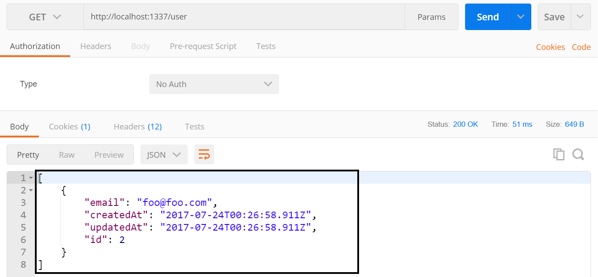

Introduction
Welcome to the Sails Tutorial.
In this tutorial, you'll learn how to build a Sails Api. Throughout the tutorial, you will be building a todo api.
Materials
Getting up and running
We will utilize a number of tools in our Sails development to allow us to create, debug, and deploy our application. We will be utilizing the following tools:
- Platforms: Windows, Mac, or Linux computer
- Software:
- git command line
- Node 6.x
- sails
- Postman
- Visual Studio Code
Below are all of the steps required to install and configure the tools.
Windows Showing File Extensions
Non-Windows users can skip to next section
By default Windows is set to not show file extensions for known files which causes files such as .gitconfig and .npmrc to show up as just a period with no file extensions. To fix this we need to set Windows Explorer to show file extensions.
Exercise: Turn On Windows Showing File Extensions
- Open Windows Explorer
Click on the View Tab and select Options

Click on the View Tab
- Uncheck the "Hide extensions for known file types"
Click Ok

Node.js
NodeJS is used to power the Sails CLI as well as install all of our dependencies. The Sails CLI will work with Node 4.x+. Since I am using Angular for my UI which requires Node version 6.9+, we are going to install the latest LTS version of Node which as of this writing is 6.11.0..
Exervise: Install Node
- Download the latest stable version (LTS) of NodeJS.
- Run the installer and accept all defaults.
To validate that Node installed successfully, open a new command prompt and run the following command:
node -v
Sails.js
Exercise:: Install Sails Globally
- Open a terminal window if it's not already open
Execute the following command to install Sails:
npm install -g sailsValidate that Sails installed successfully by running the following command:
sails -v0.12.13 as of this writing
Postman
Postman is a useful utility for testing REST apis without having to create a UI.
- You can download it from https://www.getpostman.com/apps
- Once the download finishes, launch the installer and accept all of the defaults
Visual Studio Code
Visual Studio Code is Microsoft lightweight cross platform IDE. You could use any editor that you would like to developer our Sails but only Visual Studio Code has been tested against
- Download Visual Studio Code at https://code.visualstudio.com/
- Once the download finishes, launch the installer except all of the defaults
Creating Sails Api
We will utilize the Sails CLI to generate a project for us to developer our API with. By default Sails comes with a view engine unless you tell it otherwise. When we create our project we will only be creating an API project and will not include the view engine as part of the project.
Create Project
Exercise: Create Sails Project
To generate the project we need to run the intc gen-ui command.
- Open a command prompt or terminal
- Navigate to where you store your project code (I store mine at c:\projects)
Run the following command to generate the project.
sails new sails-tutorial --no-linker --no-frontendThis will create a new Sails project called sails-tutorial and install the npm dependencies
Opening Project in Visual Studio Code
Exercise: Open Project
- Open Visual Studio Code
- Click File -> Open Folder...
- Navigate to where you created the sails-tutorial folder and click Select Folder
- Your project should now be opened in Visual Studio Code
Navigating around Visual Studio Code
Being able to effectively use your editor is key to being a super productive developer. With Visual Studio Code, there are several shortcut keys that will help you out.
| Purpose | Key |
|---|---|
| Integrated Terminal | ctrl+` |
| Open File | ctrl+p |
| Switch Between Files | ctrl+tab |
| Switch Between Files Reverse | ctrl+shift+tab |
| Hide Side Menu | ctrl+b |
| Toggle Word Wrap for File | alt+z |
| Format Document | ctrl+alt+f |
Visual Studio Settings
There are 2 types of Settings in Visual Studio Code: User and Workspace. User settings apply to all instances of Visual Studio Code. Workspace settings apply to the currently folder that you have open and are stored in a .vscode directory within the folder.
There are a few settings that I like to change within Visual Studio Code.
- Turn off the mini map in the upper right corder that I find distracting
- Turn off telemetry and crash reporter
- Turn on word wrap
- Turn on indent guides
Exercise: Updating Settings
- Go under the Preferences -> Settings (File -> Preferences -> Settings on Windows) and add the following setting to the "User Settings" tab
{
"telemetry.enableTelemetry": false,
"telemetry.enableCrashReporter": false,
"editor.minimap.enabled": false,
"editor.wordWrap": "on",
"editor.wrappingIndent": "same",
"editor.renderIndentGuides": true,
}
Sails Project Layout
API Controllers
api/controllers
Controllers are defined in the api/controllers/ folder. You can put any files you like in that folder, but in order for them to be loaded by Sails as controllers, a file must end in Controller.js.
Controllers (the C in MVC) are the principal objects in your Sails application that are responsible for responding to requests from a web browser, mobile application or any other system capable of communicating with a server. For many applications, the controllers will contain the bulk of your project’s business logic.
Controllers are comprised of a set of methods called actions. Actions are bound to routes, so that when a client requests the route, the action is executed to perform some business logic and send a response.
Using the command line you can generate a controller and model by using the sails generate command api
sails generate api <API Name>
Get more details on Controllers at http://sailsjs.org/documentation/concepts/controllers
API Models
directory: api/models
Models are defined in the api/models/ folder.
A model represents a collection of structured data, usually corresponding to a single table or collection in a database.
There are many built-in methods available on models, the most important of which are the query methods: find, create, update, and destroy. These methods are asynchronous - under the covers, Waterline has to send a query to the database and wait for a response.
Get more details on Models at http://sailsjs.org/documentation/concepts/models-and-orm/models
API Policies
directory: api/policies
Policies in Sails are used for authorization and access control. Basically they let you allow or deny access to your controllers down to a fine level of granularity.
Policies can be used for anything: HTTP BasicAuth, 3rd party single-sign-on, OAuth 2.0, or your own custom authorization/authentication scheme.
Policies are files defined in the api/policies folder in your Sails app. Each policy file should contain a single function and ideally should just check one thing.
Policies are really just Connect/Express middleware functions which run before your controllers. They are designed to be chained together.
See Policies Docs
API Responses
directory: api/responses
Sails allows for customizable server responses. Sails comes with a handful of the most common response types by default that are found in the /api/responses directory of our project. To customize these, simply edit the appropriate .js file.
Any .js script saved in the /api/responses folder will be executed by calling res.[responseName] in your controller. For example, /api/responses/serverError.js can be executed with a call to res.serverError(errors). The request and response objects are available inside the response script as this.req and this.res; this allows the actual response function to take arbitrary parameters (like serverError's errors parameter).
See Response Docs
API Services
directory: api/services
Services are defined in the api\services folder.
Services are stateless libraries of functions (called helpers) that you can use from anywhere in your Sails app. They are globalized and you don't have to use require() to access them.
See Services Docs
Configuration Overview
Configuration files are defined in the config folder.
While Sails dutifully adheres to the philosophy of convention-over-configuration, it is important to understand how to customize those handy defaults from time to time. For almost every convention in Sails, there is an accompanying set of configuration options that allow you to adjust or override things to fit your needs.
Sails apps can be configured programmatically, by specifying environment variables or command-line arguments, by changing the local or global .sailsrc files, or (most commonly) using the boilerplate configuration files conventionally located in the config/ folder of new projects. The authoritative, merged-together configuration used in your app is available at runtime on the sails global as sails.config.
Get more details on Configuration at http://sailsjs.org/documentation/concepts/configuration
Configurations Environment
file: config/env/development.js and config/env/production.js
Configurations Connections
file: config/connections.js
Storage connections are configured in the connections.js file. You can also specify connections in your config/local.js or environment-specific config files and reference them in the connections.js file.
See Docs
Configurations CORS
file: config/cors.js
CORS specifies how HTTP requests to your app originating from foreign domains should be treated. It is primarily used to allow third-party sites to make AJAX requests to your app, which are normally blocked by browsers following the same-origin policy.
See Docs
Configurations Locals
file: config/local.js
The config/local.js file is used to configure a Sails app for your local environment. The settings in this file take precedence over all other config files except .sailsrc. Since they're intended only for local use, they should not be put under version control . Use local.js to store local database settings, change the port used when lifting an app on your computer, etc.
Configurations Models
file: config/models.js
Your default project-wide model settings. We will be using it to store your migrate strategy and the default connection to use for your models.
You can also override the settings on a per-model basis.
See Docs
Configurations Policies
file: config/policies.js
Your applications ACL (access control list) to apply to each controller and route. Policies can be chained together using the array syntax.
See Docs
Configurations Routes
file: config/routes.js
Configuration for your routes. For a given route you will configure: REST verb, url, controller and function that a route maps to.
See Docs
Configurations Session
file: config/session.js
Configuration for Sails built-in session store. You can add/get information from session by using req.session.
See Docs
Generating Api
Now that we have generated our project, before we can use it, we need to generate an Api. Our Todo API will have two APIs: User and Todo. We will use the Sails CLI to generate the APIs.
When you generate a new api it will create a model and controller for the API. A model describes the data store fields with attributes such as type, required, unique, and defaultsTo. The controller will contain our functions that are related to the model.
Out of the box, Sails wires up all of the REST verbs (GET, POST, PUT, DELETE) for us and saves the data to a schema-less JSON file as the data store. This means that immediately after running the generate command we can use the API without having to write any code.
Generating User API
Exercise: Generating User API
- Visual Studio Code has a built-in terminal that we can use to run our commands. Open up the integrated terminal in Visual Studio Code by using ctrl+` or view menu -> Integrated Terminal
Run the following command to create the user API
sails generate api userThis will create 2 files for us:
- api\controllers\UserController.js
- api\models\User.js
Generating Todo Api
Exercise: Generating Todo API
In the Visual Studio Code integrated terminal (ctrl+` or view menu -> Integrated Terminal), run the following command to create the user API
sails generate api todoThis will create 2 files for us:
- api\controllers\TodoController.js
- api\models\Todo.js
Running Api
Exercise: Turning Off Views
Even though we generated our project without any views, you will see an error when you run the project for the first time related to the views. To fix this error, we need to set the views to false in the .sailsrc file.
- Open .sailsrc
To the hooks section, add the following name/value pair. Make sure to add a comma after the
"grunt": false"views": falseSave the file
Exercise: Starting Api
In the Visual Studio Code integrated terminal run the following command to start our API
sails lift You will notice that you are prompted with a big long question about database migration strategy to use. Sails does not make any assumptions on how we want it to deal with database migrations as the models are updated. Out of the box Sails uses a schema-less JSON file as the data store. This is what allows us to immediately started working with our API. Until we set the database migration strategy to use, we will be prompted to select one when we run sails lift.
You will notice that you are prompted with a big long question about database migration strategy to use. Sails does not make any assumptions on how we want it to deal with database migrations as the models are updated. Out of the box Sails uses a schema-less JSON file as the data store. This is what allows us to immediately started working with our API. Until we set the database migration strategy to use, we will be prompted to select one when we run sails lift.When prompted for the migration strategy, type 2 and press enter
 You will see that a message shows up that says "Temporarily using sails.config.models.migrate="alert"..."
You will see that a message shows up that says "Temporarily using sails.config.models.migrate="alert"..."The API is now started up and we are ready to do some testing with Postman
Get Data
Exercise: Get Data
- Open up Postman
- Set the VERB to GET (step 1)
Set the url to http://localhost:1337/user (step 2)
http://localhost:1337/userClick the Send button (step 3)
- Right now you should have gotten an empty array as we have not added any data yet (step 4)
- You should have also gotten a status code of 200 (step 5)

Insert Data
Exercise: Insert Data
We can insert data using the REST verb POST.
- In Postman, change the VERB to POST (step 1)
Leave the url set to http://localhost:1337/user (step 2)
http://localhost:1337/userClick on the Body tab (step 3)
- Click raw radio button (step 4)
- Change the type dropdown from "Text" to "application/json" (step 5)
Set the request body to the following JSON (step 6)
{ "email": "foo@foo.com", "password": "123456" }Click the Send button (step 7)
You will get an output similar to the following. (step 8 )
{ "email": "foo@foo.com", "password": "123456", "createdAt": "2017-07-23T22:09:29.601Z", "updatedAt": "2017-07-23T22:09:29.601Z", "id": 1 }You should also have a status code of 201 (step 9)
Update Data
Exercise: Update Data
We can update data using the REST verb PUT.
- In Postman VERB to PUT (step 1)
- Change the url to http://localhost:1337/user/1 (step 2)
- Click on the Body tab (step 3)
- Click raw radio button (step 4)
- Change the type dropdown from "Text" to "application/json" (step 5)
Set the request body to the following JSON (step 6)
{ "email": "foo1@foo.com", "password": "1234567" }Click the Send button (step 7)
You will get an output similar to the following. (step 8)
{ "email": "foo1@foo.com", "password": "1234567", "createdAt": "2017-07-23T22:09:29.601Z", "updatedAt": "2017-07-23T22:09:29.601Z", "id": 1 }You should also have a status code of 201 (step 9)

Delete Data
Exercise: Delete Data
We can update data using the REST verb DELETE.
- In Postman VERB to DELETE (step 1)
- Change the url to http://localhost:1337/user/1 (step 2)
- Click the Send button (step 3)
You will get an output similar to the following. (step 4)
{ "email": "foo1@foo.com", "password": "1234567", "createdAt": "2017-07-23T22:09:29.601Z", "updatedAt": "2017-07-23T22:09:29.601Z", "id": 1 }You should also have a status code of 200 (step 5)

Model Migration Strategy
Right now everytime you start sails lift, you are asked what migration strategy you want to use to keep the model in sync with the data store. Being asked each time becomes annoying very quickly. Lets go ahead and look at migration strategy options.
As you are developing your API and changing the models, you need to decide on the strategy to use for keeping your model in sync with your data store.
Migration Options
There are 3 options:
| Migration Strategy | Description |
|---|---|
| safe | never auto-migrate. you will perform the migration by hand |
| alter | auto-migrate columns/fields but attempt to keep existing data |
| drop | wipe/drop ALL data and rebuild models every time you run sails lift |
How auto-migrations work
When you lift your Sails app in a development environment, the configured auto-migration strategy will run.
If you are using migrate: 'safe', then nothing extra will happen at all.
If you are using drop or alter, Sails will load every record in your development database into memory, then drop and recreate the physical layer representation of the data (i.e. tables/collections/sets/etc.) This allows any breaking changes you've made in your model definitions, like removing a uniqueness constraint, to be automatically applied to your development database.
As well if you are using alter, Sails will then attempt to re-seed the freshly generated tables/collections/sets with the records it saved earlier.
Can I use auto-migrations in production?
The drop and alter auto-migration strategies in Sails exist as a feature for your convenience during development, and when running automated tests. They are not designed to be used with data you care about. Please take care to never use drop or alter with a production dataset.
As a failsafe, any time you lift your app in a production environment, Sails always uses migrate: 'safe', no matter what you have configured.
In many cases, hosting providers automatically set the NODE_ENV environment variable to "production" when they detect a Node.js app. Even so, please don't rely only on that failsafe, and take the usual precautions to keep your users' data safe.
Set Migrate Strategy
Exercise: Set Migrate Strategy
Since we are in development, we are going to use the alter strategy to have Sails keep our model in sync with our data store.
- Open the config\models.js file
At the bottom of the file uncomment the migrate line
migrate: 'alter'
Overriding Built-In REST Verbs
Up to this point we have been using all of the built-in REST function. However, we are going to want to create our own function with our own business logic.
Here is a short list of some of the business logic we will be creating:
- Validate that the email address is an actual email address
- Encrypted the password
- Remove the encrypted password from the returned json
- Only allow a user to get, update and delete data that they own
- Allow a user to signup
- Allow a user to login
- Allow a user to sign out Be able to query to the current logged in user
- Associate a user to a todo item
- Store the logged in user in session state
Function Map
To override the built-in get, post, put, and delete, we will be creating methods in the controller. Below is the mapping of REST verbs to function names.
| VERB | Method Name | Description |
|---|---|---|
| POST | create | Insert new record |
| GET | find | Get all records |
| GET/:id | findOne | Get record by ID |
| PUT | update | Update record |
| DELETE | delete | Remove record |
Function Format
The standard format of the sails controller function looks like the following with replacing METHOD_NAME with the method name from above.
Function Format Example
METHOD_NAME: function METHOD_NAMEFn(req, res) {
// get body of the request
var body = req.body;
// get id from either querystring or body
var id = req.params.id;
}
This format for the function is the same for the custom functions that we will be creating for logging in and logging out.
User API Logic
In this chapter we are going to add logic to allow a user to login, signup, logout, perform CRUD (Create, Read, Update, Delete) operations on the data that they own.
Sign up
The first thing that we are going to do is override the POST verb with our own create function that will allow a user to signup for our Todo API. Within the sign up function we will validate the email address is an actual email address, then encrypt the password before creating a user record in the data store and finally return back the newly created user.
Exercise: Create Sign up Stub
For the sign up since we will be overriding the POST verb, we will be creating a function called create.
Open the api\controllers\UserController.js file
usercontroller.jsIn Visual Studio Code, use Ctrl+P to bring up the find file dialog, paste in the file name, and either click on the file or arrow down to it and press enterWithin the module.exports add the following function stub to override the POST verb
create: function createFn(req, res){ }The function takes in 2 parameters: req is the request and res is the response.By creating the above method, Sails will automatically use this method for the POST verb without us having to do any route configurations. It is using convention over configuration.
Exercise: Validate Email Address
The first thing we want to do when a user signs up is to validate that their email address is an actual email address. It is good practice to re-validate the data that is coming into the API even if the UI is also doing validation. To validate the email address, we are going to use Node Machines. Each Node Machine has a single and clear purpose.
The only downside to using the machine packs is that you will have to use callbacks instead of promises within the Sails functions that we create that uses a machine pack.
Before we can use a Node Machine Pack we need to install the pack we want to use. They are installed using NPM. For email addresses, we are going to use the machinepack-emailaddresses.
Open the Visual Studio Code Integrated Terminal
ctrl+` to show the integrated terminalRun the following command to install the machinepack-emailaddresses that will be used to validate the email address
npm install --save machinepack-emailaddressesYou can do a ctrl+` to toggle off the integrated terminal
In the api\controllers\UserController.js file at the top outside of the module.exports, we need to import the machinepack-emailaddresses
var EmailAddresses = require('machinepack-emailaddresses');
Within the create function we are ready to start adding in our logic.
Create a variable that gets the email address from the req parameters (body)
var email = req.param('email');Call the EmailAddress.validate function to validate the email address and then check the results. The Validate function has 3 possible returns: error, invalid, and success. If there is an error we will return a server error (500 status code). If the email is not valid then we will return a bad request (400 status code). If the email is valid, then we will move on to encrypting the password.
// validate the email address that is passed in EmailAddresses.validate({ string: email, }).exec({ // called if there is a general error error: function(err){ return res.serverError(err); }, // called if email is invalid invalid: function(){ return res.badRequest('Does not look like an email address to me!'); }, // called if the email validation passed success: function(){ } });
Within the success callback for the email validate we are ready to encrypt the password. We will be using the machinepack-passwords to do the encryption and validating that the encrypted password and unencrypted passwords match.
Open the Visual Studio Code Integrated Terminal
ctrl+` to show the integrated terminalInstall the machinepack-passwords
npm install --save machinepack-passwordsAt the top of the UserController, we need to add a require statement for the machinepack-passwords
var Passwords = require('machinepack-passwords');Within the success callback for the email validate we need to call the Passwords.encryptPassword function and pass it the password from the request parameters (body). The Passwords.encryptPassword function returns back 2 responses: error or success. If there is an error, we will return a server error (500 status code). If it is successful, we will create the user in our data store.
// encrypt the password // get password from the body of the request with the req.param call Passwords.encryptPassword({ password: req.param('password'), }).exec({ // if there is an error return a server error 500 status code error: function(err){ return res.serverError(err); }, // if success then move on to the next step success: function(result){ } })
Now we are ready to create our user in the data store and add the user to the request session. Within the success callback add the following code to create a user with email and encryptedPassword fields. We will get the email from the local variable that we created earlier and the encryptedPassword will come from the results of the Password.encryptPassword call. To add the record to the data store, we are using the Waterline ORM and calling User.create. Waterline allows us to write data store agnostic code.
Within the success callback add the following code to create a local user variable
// create user with email and encryptedPassword to add to the database var user = { email: email, encryptedPassword: result };After the user variable declaration, call the Waterline ORM create function to create a new record based on the user variable that we created in the previous step
// User waterline to create a new user by calling .create and passing in the local user variable User.create(user, function (err, createdResult) { // check for errors if (err) return res.serverError(err); // add user id to session state req.session.user = createdResult.id; // return back created user with a status code of 200 // see api\responses\ok.js for what the ok response is actually doing return res.ok(createdResult); });- Note: When we set the req.session.user was are only setting the id. This is so that the encryptedPassword hash does not end up in the in-memory session store.
Verify Sign up API
- In order to test the create function, we have to restart the sails lift. Stop sails lift using ctrl+c and run sails lift
Now if you run the POST call against the User API, you will see if returns back a user with an encryptedPassword (step 8)
Remove Password from JSON
We now have users saved with an encrypted password but we are passing the encrypted hash as part of the returned user. This is not a good security practice. There is no reason to pass the encrypted password back from the API. Luckily it is really easy to global remove this field anytime the user is serialized to JSON.
Exercise: Stripping the encryptedPassword from JSON
Open api\models\User.js
user.jsWithin the attributes we are going to create a function called toJSON
toJSON: function (){ }Within the toJSON function we need to get a reference to the current record by calling this.toObject() and setting the output a variable
var obj = this.toObject();Now that we have a reference to the current record (object), we can call delete to remove the encryptedPassword field from the JSON results
delete obj.encryptedPassword;The last thing left to do is return back the object
return obj;
Verify toJSON Works
- You must restart sails lift for the changes to take effect
Now if you run the GET call for the user, you will see that the encryptedPassword field is no longer returned back from the API

Make sure Email is unique
We want to make sure that each user is unique and has not signed up already. To enable this constraint we need to define the email field and add the unique attribute to the field.
Fields and attributes are defined within the model file in the attributes section. Some of the common attributes are: required, type, unique, and defaultsTo.
Exercise: Defining Email Field
Within the already open api\models\user.js add the following attribute to the attributes section. This will tell Sails that the email field is required, of type string, and needs to be unique. For the unique attribute, it is actually run within the data store and not within the API.
email: { required: 'true', type: 'string', unique: true, },
Verify Unique Attribute
- You must restart sails lift for the changes to take effect
If you now try to do a POST again for the user with the same email you will get an error that unique constraint was violated.
Exercise: Create a Custom Response
The default unique error is really ugly. Instead we can check for the unique error and return our own response that contains an easier message to parse.
We need to replace the current error check in the User.create callback with the following code
if (err) { if (err.invalidAttributes && err.invalidAttributes.email && err.invalidAttributes.email[0] && err.invalidAttributes.email[0].rule === 'unique') { return res.alreadyInUse(err); } return res.serverError(err); }
In our error trapping we are not returning res.alreadyInUse when the unique constraint is fired. We need to create this response before our code will work.
On the api\responses folder, right-click on the folder, pick New File and name the file alreadyInUse.js
alreadyInUse.jsThe alreadyInUse response will return a response with a 409 status code and message of "Email address is already taken by another user, please try again."
module.exports = function alreadyInUse(err){ // Get access to `res` // (since the arguments are up to us) var res = this.res; if (err.invalidAttributes.email) { return res.send(409, 'Email address is already taken by another user, please try again.'); } };By create the file in the response folder, the response is automatically wired up and available to use.
Verify Custom Response
- You must restart sails lift for the changes to take effect
If you now try to do a POST again for the user with the same email you will get an error that looks much nicer than before and has a status code of 409. You could also change the response message to be a standard format that the whole API will use instead of just plain text if you wanted to
Exercise: Encrypted Password Field Definition
In the api\model\User.js file we are also going to define the encryptedPassword as well so that we have it later when we change over to a schema based data store like Postgres or MySql. For the encryptedPassword field we are going to set it to be required and of type string.
Open the api\models\User.js
user.jsTo the attributes add the encryptedPassword field
encryptedPassword: { required: 'true', type: 'string', },
Verify Encryped Password Field Attributes
- You must restart sails lift for the changes to take effect
- Now you have to input a password when calling the sign up API and it must be a string.
Login
You can't have a sign up without having a login to go with it. The login function will pull the user from the data based on the email address, check if a record was found and if it was then verify that the password matched the encrypted password in the database.
Exercise: Create the Login Function Stub
Open the api\controllers\UserController.js
UserController.jsWe are going to add a function called login with the standard Sails controller function definition
login: function loginFn(req, res) { },The first thing we are going to do is attempt to pull the user out of the database based on the email address. We will be using the Waterline findOne function to ensure that we only pull back the 1 record. We will get the email from req.param
User.findOne( { email: req.param('email') }, function (err, result) { } )In the callback function, we need to add our standard error check that will return back a server error if an error did occur
if (err) return res.serverError(err);The next thing we want to check for is if the user was found or not. If the user was not found then we want to return a 404 not found error
if (!result) return res.notFound();If we found the user then we want to use the Node Machine password pack that we used earlier to validate that the unencrypted and encrypted passwords match. The response from the machine pack will be either error, incorrect or success. If there was an error we will return a server error. If the password was incorrect we will return a forbidden error. If it was success then we will add the session user and return the user.
Passwords.checkPassword({ passwordAttempt: req.param('password'), encryptedPassword: result.encryptedPassword }).exec({ error: function (err) { return res.serverError(err); }, incorrect: function () { return res.forbidden('Invalid Login, Please Try Again!'); }, success: function () { req.session.user = result.id; return res.ok(result); } })- Note: When we set the req.session.user was are only setting the id. This is so that the encryptedPassword hash does not end up in the in-memory session store.
Verify Login API
- You must restart sails lift for the changes to take effect
- Open Postman
- Set the REST verb to POST (step 1)
Set the URL to http://localhost:1337/user/login (step 2)
http://localhost:1337/user/loginClick on the Body tab (step 3)
- Select Raw (step 4)
- Set the type to JSON (application/json) (step 5)
Set the body of the request to the following to pass in the email and password fields. Change the email and password values as needed for the user that you created earlier with the sign up function (step 6)
{ "email": "foo@foo.com", "password": "123456" }Click the Send button (step 7)
- If everything worked you should now be logged and your user information was returned back to you (step 8) with a 200 status code (step 9).
Logout
Now that we can either sign up or login to the API, we need to be able to log out of the API. Logging out of the API in our case is really simple. We are going to clear the req user session and return back a response ok (200 status code)
Exercise: Implement Logout Function
- Open the api\controllers\UserController.js
Add the logout function below to the existing functions
logout: function logoutFn(req, res) { req.session.user = null; return res.ok(); },
Verify Logout API
- You must restart sails lift for the changes to take effect
- Open Postman
- Set the verb to GET (step 1)
Set the url to http://localhost:1337/user/logout (step 2)
http://localhost:1337/user/logoutClick the send button (step 4)
- You should get an empty response with a status code of 200 (step 4)
Who is Logged In?
Exercise: Get Logged in User Info
Open the api\controllers\UserController.js
UserController.jsWe are going to add a function called userIdentity
userIdentity: function (req, res) { },Within the userIdentity function we are going to use the Waterline ORM find a single record in the data store by running findOne
- We will query by id againt the req.session.user
- We will do the standard error trapping looking for errors and missing records.
If user was found then return an ok response
User.findOne( { id: req.session.user }, function (err, result) { if (err) return res.serverError(err); if (!result) return res.notFound(); return res.ok(result); } );
Verify User Identity API
We can test the userIdentity API by making a GET call to http://localhost:1337/user/userIdentity after we have called the login API
- You must restart sails lift for the changes to take effect
- Open Postman
- Make a call to the login API like we did before so that we have a logged in user
- Open another tab in Postman
- Set the verb to GET (step 1)
Set the url to http://localhost:1337/user/userIdentity (step 2)
http://localhost:1337/user/userIdentityClick the Send Button (step 3)
- You should see your user information returned (step 4) with a 200 status code (step 5)
Get User Info
Right now if you sign up a 2nd user and then do a GET on the user API, you will be able to see both records. This is not great from a privacy standpoint. You should only be able to see your user information.
In order to restrict the data, we are going to override the find (get all) and findOne (get 1 record by id) functions to only return back the information for the logged in user.
Even though we will only ever be returning 1 record back, we want to use the find function which returns an array instead of the findOne that returns a single record. This way we keep the expected return type of a GET all REST call which is an array of records.
Exercise: Override Find Function
Open api/controllers/UserController.js
usercontroller.jsAdd the following function stub to override the find function
find: function findFn(req, res) { },Within the find function, we want to use Waterline to call the find function on the User object, filter by the user we have stored in session, and then have our standard callback to process the results
User.find( { id: req.session.user }, function (err, results) { } );Within the callback the first thing we want to do is check for errors
if (err) return res.serverError(err);Then we want to check if the user was found or not. Since the find method returns an array we can look at the length to determine if the record was returned. If the record is not found, we will return a response notFound.
if (results.length === 0) return res.notFound();The final thing we are going to do is return the user record that was found with a 200 status code.
return res.ok(results);
Verify Find Override
- You must restart sails lift for the changes to take effect
- Open Postman
- If you have not created a 2nd user, make a call the sign up API and create a 2nd user
- If you have already created the 2nd user, then call the login API to login
- Open another tab in Postman
- Set the verb to GET (step 1)
Set the url to http://localhost:1337/user (step 2)
http://localhost:1337/userClick the Send Button (step 3)
- You should only see your user information returned (step 4) with a 200 status code (step 5)
Exercise: Find by Id Override
To override the find by get (http://localhost:1337/user/2) we need to override the findOne function. The findOne is similar to the find that we just created except that we will only be returning a single record back instead of an array with 1 record.
In the api/user/usercontroller.js add the following function that will call the Waterline findOne function on the User object, filtering by the id stored in request session and then running our standard error checks before return back the user record.
findOne: function findOneFn(req, res) {
User.findOne(
{ id: req.session.user },
function (err, result) {
if (err) return res.serverError(err);
if (!result) return res.notFound();
return res.ok(result);
}
);
},
Verify Find by Id Override
- You must restart sails lift for the changes to take effect
- Open Postman
- Call the login API to login
- Open another tab in Postman
- Set the verb to GET (step 1)
Set the url to http://localhost:1337/user/2 (step 2)
http://localhost:1337/user/2The 2 at the end of the url is the Id field value for the user record.
Note You can technically use any value as long as it is not a route name since we are getting the Id from the req.session.user and not from the querystring.
Click the Send Button (step 3)
- You should only see your user information returned (step 4) with a 200 status code (step 5)
Update User
The next thing we are going to do is override the update function so that we can only update our own user.
We will allow the user to change their email and password. We need to make sure to valid that email address and encrypt the password.
Exercise: Create Update Function
Open the api/models/UserController.js
UserController.jsCreate the update function stub
update: function updateFn(req, res){ },Within the update function we want to use the Node Machine email pack to validate the email address like we did in the create function
EmailAddresses.validate({ string: req.param('email'), }).exec({ error: function (err) { return res.serverError(err); }, invalid: function () { return res.badRequest('Does not look like an email address to me!'); }, success: function () { }, });If the email address is validate we want to encrypt the password like we did before with the Node Machine pack passwords
Passwords.encryptPassword({ password: req.param('password'), }).exec({ error: function(err){ return res.serverError(err); }, success: function(result){ }, });Lastly, in the success of the encrypt response, we want to update the user record in the data store and return back the results.
var user = { email: req.param('email'), encryptedPassword: result, } User.update( { id: req.session.user }, user, function (err, result) { if (err) return res.serverError(err); if (results.length === 0) return res.notFound(); return res.ok(result); } );Note: The Waterline update call returns an array of records.
Verify Update Override
- You must restart sails lift for the changes to take effect
- Open Postman
- Call the login API to login
- Open another tab in Postman
Set the verb to PUT (step 1)
PUT is the REST verb for doing an updateSet the url to http://localhost:1337/user/2 (step 2)
http://localhost:1337/user/2The 2 at the end of the url is the Id field value for the user record.
Note You can technically use any value as long as it is not a route name since we are getting the Id from the req.session.user and not from the querystring.
Click on the Body tab (step 3)
- Select Raw (step 4)
- Set the type to JSON (application/json) (step 5)
Set the body of the request to the following to pass in the email and password fields. Change the email and password values (step 6)
{ "email": "foo2@foo.com", "password": "1234567" }Click the Send button (step 7)
- If everything worked you should now be logged and your user information was returned back to you (step 8) with a 200 status code (step 9).
Delete User
The last thing that we are going to do is to override the delete function to ensure that we can only delete our own user.
The user must be logged in before they can be deleted.
Exercise:
We will call the Waterline delete function on the User object and make sure to filter it by the user id that is stored in req.session.user. We will then do our standard error traping and return back the result. We will also clear out the req.session.user since we are deleting the user and we want to make sure that they are actually logged out of the API.
Even though we are deleting the user we will return back the record that we just deleted. This way we keep with the way the Sails does it out of the box.
Open the api/controllers/UserController.js
UserController.jsAdd the following function for the delete call
delete: function deleteFn(req, res) { User.delete( { id: req.session.user } ), function (err, result) { if (err) return res.serverError(err); if (!result) return res.notFound(); req.session.user = null; return res.ok(result); } }
Verify Delete Override
- You must restart sails lift for the changes to take effect
- Open Postman
- Call the login API to login
- Open another tab in Postman
Set the verb to DELETE (step 1)
PUT is the REST verb for doing an updateSet the url to http://localhost:1337/user/2 (step 2)
http://localhost:1337/user/2The 2 at the end of the url is the Id field value for the user record.
Note You can technically use any value as long as it is not a route name since we are getting the Id from the req.session.user and not from the querystring.
Click the Send button (step 3)
- If everything worked you should now be logged and your user information was returned back to you (step 4) with a 200 status code (step 5).
We have now completed the initial functionality for our User API. Next we will configure our security policies so that we do not have to remember to login before running any of the function.
Locking Down the Api
Update to this point you have had to remember to call the Login or Signup routes before you can see or update Todo items. It would be much better if we directed users with errors messages that tell them that they need to perform an authentication call before trying to make a call.
In order to do the authentication checks, Sails uses policies to lock down routes. A policy is essential a function that returns a true/false value for whatever check you need to do.
Policies are stored in the api\policies directory. By creating a file in the policies directory, they are automatically ready to be used to lock down a route.
We will be creating 2 policies:
- Check if you are logged in
- Check if you are logged out
Policy to Check if Logged In
Exercise: Create Is Logged In Policy
In the api\policies folder, create a new JavaScript file called isLoggedIn.js
isLoggedIn.jsThe function format for Sails policies as follows. It takes in a request, response, and next option.
module.exports = function(req, res, next) { }Within the policy function, we will use the req.session.user to determine if the user has logged in yet or not. If the user has logged in, we need call next to go to the next policy in the chain. If the user has not logged in, we will return the forbidden response.
if (req.session.user) { return next(); } return res.forbidden('Please Login First.');
Policy to Check if Logged Out
Exercise: Create Is Logged Out Policy
In the api\policies folder, create a new JavaScript file called isLoggedOut.js
isLoggedOut.jsRemember that the function format for Sails policies as follows. It takes in a request, response, and next option.
module.exports = function(req, res, next) { }Within the policy function, we will use the req.session.user to determine if the user has logged in yet or not. If the user has not logged in, we will call to go to the next policy in the chain. If the user has logged in, we will return the forbidden response.
if (!req.session.user) { return next(); } return res.forbidden('Please Logout First');
Locking Down Routes
Now that we have both of our policies created, we need to configure which routes will use which policy.
| Controller | Function | Policy | Description |
|---|---|---|---|
| UserController | login | true | Let everyone make a call to login |
| UserController | create | ['isLoggedOut'] | Make sure that you are logged out before trying to login again |
| UserController | * | ['isLoggedIn'] | All routes that aren't already configured will use this policy chain |
| TodoController | * | ['isLoggedIn'] | All routes in Todo controller will use this policy |
Exercise: Locking Down Routes
Open config\policies.js
policies.jsWithin the module.exports.policies, add the following to the list of models that are locked down
UserController: { 'login': true, 'create': ['isLoggedOut'], '*': ['isLoggedIn'] }, TodoController: { '*': ['isLoggedIn'] }
Verify The Policies Are Working
We are now ready to test that our security is working.
Exercise: Testing policy
Restart sails lift. If you already have sails lift running, you need to ctrl+c to stop running it and restart it. Policies do not automatically up themselves as you change the code until sails lift is restarted.
For the User routes, if you try to do any call besides a POST, you will get a message that you need to login first
For the Todo routes, if you try to do any call you will get a message that you need to login first. Even though we have not created any custom routes all of the standards REST verbs are already wired up
Once you call the login route you will be able to do the following:
- For User routes, you will be able to do call all of the routes except the create new user.
- For Todo routes, you will be able to call all routes
After you have logged in, if you try to create a user you will get an error message that you need to logout first.
Routing
As you create your own methods there are times where you want the route to be different from the function name in the controller.
For example, in our UserController, we created a userIdentity function but having the route be /user/userIdentity is not very REST like. Instead it would be better if could change the route to be /user/identity
All of the routes are configured in the config\routes.js file.
Change userIdentity Route
Exercise: Create User Identity Route
Open the config/routes.js
routes.jsWithin the module.exports.routes, add the following route that will setup a GET call at /user/identity that maps to the UserController userIdentity function.
'GET /user/identity': 'UserController.userIdentity'
Verify Route Works
- For the route to take effect you will need to stop the
sails liftwith a ctrl+c and then re-run thesails lift - Open Postman
- Make a call to the user login API
- Set the verb to be GET (step 1)
Set the url to be http://localhost:1337/user/identity (step 2)
http://localhost:1337/user/identityClick the Send button (step 3)
- You should now see the user information for the logged in user (step 4) and a status code of 200 (step 5)
Todo API Logic
So far we have not done anything with the Todo API. That is about to change though. We are going to add the following functionality to the Todo API.
- Associate a Todo record to a User Record in a 1:Many setting (e.g. a User will have many Todo records and a Todo Record will have 1 user)
- Get the associated user from the req.session.user
- Set completed for a new record to false by default
- Make sure that for viewing, updating and deleting the a user can only affect their records
Associating User to Todo Items
We could just put the User id into the Todo record but that would not actually associate the data. By creating an actual association we will be able to also include the associated user record with the Todo recrod.
Exercise: Associate Models
Open api\models\Todo.js
todo.jsIn the attributes section add the following attribute to create a field that has an association to the User model.
user: { model: 'user' }Save the file
We are now going to add the reverse associate so that the user model can get a list of associated Todo records.
Open api\models\User.js
User.jsTo the attributes section, we need to add the following field that says it will be a collection of Todo records and associated through the User field that we created in the previous steps.
todoItems: { collection: 'todo', via: 'user' },Save the file
Create Todo
We are now going to setup the ability to create Todo items that gets the user for the res.session.user and sets completed to false by default.
Exercise: Setup Model Field Attributes
Open api\models\Todo.js
todo.jsIn the attributes we need to add the completed field. We are going to make the field required, of type boolean, and defaults to false.
completed: { required: 'true', type: 'boolean', defaultsTo: 'false' },
While we are defining fields, lets go ahead and define our item field that will hold the text for our todo item. The item field will be required and of type string.
In the attributes for the Todo model, add the item field below
item: {
required: 'true',
type: 'string'
},
Exercise: Create Todo
Now that we have our fields defined, we are ready to override the POST verb with out own logic. We wil get the item text from the body of the request and the user from the req.session.user. We do not need to include the completed field since it will automatically default to true.
Open api/controllers/TodoController.js
TodoController.jsAdd our create method stub to the module.exports
create: function createFn(req, res){ }Within the create function, we need to create a variable to hold the todo object we will be creating with the item and user fields populated. The item field we will get from the request params collection and the user field from req.session.user.
var todo = { item: req.param('item'), user: req.session.user };Next we need to call the Todo model's create function and pass in the todo object we just created. Then we will run our standard callback error check and return statement
Todo.create(todo, function (err, results) { if (err) res.serverError(err); return res.ok(results); });Save the TodoController.js file
Verify Todo Create
- Restart sails for the changes to take effect
- Open Postman
- Make a call to the user login API
- Set the REST verb to POST (step 1)
Set the URL to http://localhost:1337/todo (step 2)
http://localhost:1337/todoClick on the Body tab (step 3)
- Select Raw (step 4)
- Set the type to JSON (application/json) (step 5)
Set the body of the request to the following to pass in the email and password fields. Change the email and password values as needed for the user that you created earlier with the sign up function (step 6)
{ "item": "Coding with @digitaldrummerj and SailsJS" }Click the Send button (step 7)
If everything worked a new todo record was created and was returned back to you (step 8) with a 200 status code (step 9).
You can verify that the create actually did work by running a GET against http://localhost:1337/todo
http://localhost:1337/todo
Get Todo List
Next we want to be able to get back the Todo records that belong to us. Right now we can pull all of the Todo records even if we do not own them. To fix this issue, we are going to override the find function to filter it by the user field.
Exercise: Get Todo List
Open api\controllers\TodoController.js
TodoController.jsWithin the module.exports, add the following function. This function is just like we did for the override of the find function in the UserController with the addition of the populate users call.
find: function findFn(req, res) { Todo.find( { user: req.session.user } ) .populate('user') .exec(function (err, results) { if (err) return res.serverError(err); if (results.length === 0) return res.notFound(); return res.ok(results); }); },Save the TodoController.js
Verify the Find Function
- You must restart sails lift for the changes to take effect
- Open Postman
- Make sure to call the login API
- Open another tab in Postman
- Set the verb to GET (step 1)
Set the url to http://localhost:1337/todo (step 2)
http://localhost:1337/todoClick the Send Button (step 3)
- You should only see your user information returned (step 4) with a 200 status code (step 5)
Get Single Todo
Just like with the find all, we can also see any individual todo record regardless if we own it or not. To fix this we need to override the findOne function.
Exercise: Find Single Todo Item
Open api\controllers\TodoController.js
TodoController.jsAdd the following function to override the findOne function to make sure that we own the record, populate the user association, and then run our standard error trap/return statement.
findOne: function findOneFn(req, res) { Todo.findOne( { user: req.session.user } ) .populate('user') .exec(function (err, result) { if (err) return res.serverError(err); if (!result) return res.notFound(); return res.ok(result); }); }Save the file
Verify the Find One Function
- You must restart sails lift for the changes to take effect
- Open Postman
- Make sure to call the login API
- Open another tab in Postman
- Set the verb to GET (step 1)
Set the url to http://localhost:1337/todo/1 (step 2)
http://localhost:1337/todo/1The 1 at the end of the url is the Id (primary key) value of the Todo record that we want to pull. If the Id field for the Todo record you created is not 1, then change the value in the url.Click the Send Button (step 3)
- You should only see your user information returned (step 4) with a 200 status code (step 5)
Update Todo
A Todo API wouldn't be complete without the ability to mark off the you completed an item. However, we need to ensure that the user actually owns the record before we update it. Up to this point, we have only used 1 parameter in our Waterline calls. For the Update statement, we are going to use 2 parameters: todo record id and the user value from req.session.user.
Exercise: Update Single Todo
Open api\controllers\TodoController.js
TodoController.jsAdd the following function stub to the module.exports
update: function (req, res) { },Within the update function, create a variable called record that will hold the values that we plan on updating.
var record = { id: req.param('id'), completed: req.param('completed'), user: req.session.user };Then we need to make a call to the Waterline update function on the Todo object and then run our normal error check and return statements. If we do not get a record back, then we will assume that we don't own the record and return a not found error.
Todo.update( { user: req.session.user, id: req.param('id') }, record, function (err, results) { if (err) res.serverError(err); if (results.length === 0) return res.notFound(); return res.ok(results); } );
Verify Update Function
- Restart sails for the changes to take effect
- Open Postman
- Make a call to the user login API
- Set the REST verb to POST (step 1)
Set the URL to http://localhost:1337/todo/1 (step 2)
http://localhost:1337/todo/1Click on the Body tab (step 3)
- Select Raw (step 4)
- Set the type to JSON (application/json) (step 5)
Set the body of the request to the following to pass in the email and password fields. Change the email and password values as needed for the user that you created earlier with the sign up function (step 6)
{ "item": "Verify Coding with @digitaldrummerj and SailsJS", "completed": true }Click the Send button (step 7)
If everything worked a new todo record was created and was returned back to you (step 8) with a 200 status code (step 9).
You can verify that the update actually did work by running a GET against http://localhost:1337/todo
http://localhost:1337/todo
Delete Todo
The last major thing we need to do it to override the delete function to make sure we can only delete record that we own.
Exercise: Delete Single Todo
Open api\controllers\TodoController.js
TodoController.jsThe delete function is like the other function that we have been overriding. We are going to take in the Id of the record to delete, make sure we own it and then run our standard error/response check.
delete: function (req, res) { Todo.delete( { user: req.session.user, id: req.param('id'), }, function (err, results) { if (err) res.serverError(err); if (!results) return res.notFound(); return res.ok(results); } ); },
Verify Delete Function
- Restart sails for the changes to take effect
- Open Postman
- Make a call to the user login API
- Set the REST verb to POST (step 1)
Set the URL to http://localhost:1337/todo/1 (step 2)
http://localhost:1337/todo/1Click the Send button (step 3)
If everything worked a new todo record was created and was returned back to you (step 4) with a 200 status code (step 5).
You can verify that the delete actually did work by running a GET against http://localhost:1337/todo
http://localhost:1337/todo
CORS Configuration
Before we can use our API against a UI or allow others to call the API we need to configure CORS.
CORS allows us to configure which routes, domains, if cookies are passed in, which REST verbs are allowed, and what header values are allowed.
Without configuring, no one would be able to make calls to our API.
CORS Routes
Exercise: Routes
The 1st configuration is the routes that are allowed configuration. You do not have to allow all Routes and can configure CORS on a per Route basis if you would like. If I am doing an API that is meant to be called by anyone, I typically set allRoutes to true.
For the purpose of this tutorial, we are going to set it to allow all routes.
Open config\cors.js
cors.jsFind the commented out allRoutes, uncomment it and set it to true
allRoutes: true,Save the file
CORS URLS to Allow
You need to specify which URLs are allowed make calls to our API. It is a comma delimited list of host names beginning with either http:// or https://. You can also use * to say to allow all domains.
For the purpose of this tutorial, we are going to allow all domains to make API calls. This means that any could make a Todo UI and use our API as the backend.
Exercise: Urls to Allow
Still within the config\cors.js
cors.js
Find the comment our origin and uncomment it.
origin: '*',Save the file
CORS Cookie Sharing
The ability to share cookies with the API is very important when dealing with in-memory Sails sessions. By default Sails uses in-memory sessions and sends a cookie with the session hash to the client. If the client does not send the cookie back with each request then Sails treats the session as a new session which means that for our API, the user would never be treated as being logged in.
Exercise: Allow Cookies
Within config\cors.js
cors.jsFind the commented out credentials and uncomment it
credentialsSave the file
CORS Allowed REST verbs
As part of the CORS pre-flight checks, it determines if the REST verb is allowed or not. We are going to define that all REST verbs, options and head are allowed.
Exercise: REST Verbs Allowed
Within config\cors.js
cors.jsFind the methods list that is commented out and uncomment it.
methods: 'GET, POST, PUT, DELETE, OPTIONS, HEAD',Save the file
CORS Headers
Exercise: Headers
Within the config\cors.js
cors.jsFind the commented out headers and uncomment it
headers: 'content-type'Save the file
Verifying CORS
Before when you tried to query the API, you got a PreFlight error. Now if you try to query the API, you will be able to see any machine can query the API.
Deploying
Preparing for Production
Exercise: Set Port
Open config/env/production.js
production.jsFind the commented out port number and uncomment it. This way our API will be on port 80.
Save the file
Light Reading for Later: http://sailsjs.com/documentation/concepts/deployment
Deploy to Heroku
Prerequisites:
- Git
- Heroku account
- Heroku Toolbelt installed (CLI tool for creating and managing Heroku apps)
Exercise: Create Heroku App
- Stop sails lift
- Open a command prompt or Windows terminal outside of Visual Studio Code
- Navigate to our Sails app
Login to your Heroku account
heroku loginIf heroku can't be found, you will need to hit the trash in the upper right of your integrated shell and then open the integrated terminal up againCreate a new heroku app
heroku create your-app-nameNext we need to create a ProcFile in the root of our project to tell Heroku how to run our Sails app
ProcfileIn the Procfile, add the following line
web: node app.jsWe need create a Git repository for our Sails ap
git initWe are going to use Git on Heroku to do a deploy to Heroku
heroku git:remote -a your-app-nameAdd the Procfile to Git
git add .Now we need to commit the Procfile
git commit -m "initial commit with Procfile"We need to push to heroku
git push heroku masterIt will take a bit to deploy and install the dependencies on Heroku.
Note: The Api will not work yet since the file based JSON file does not work on Heroku. Instead we need to connect to an actual data store which we will do in the next chapterAnytime you need to redeploy the app on Heroku run the following commands:
git add . git commit -m "new changes" git push heroku masterDeploy to Azure
For this tutorial, we will not be using Azure but if you need to deploy to Azure, Microsoft has a great article on their Docs site at [https://docs.microsoft.com/en-us/azure/app-service-web/app-service-web-nodejs-sails] (https://docs.microsoft.com/en-us/azure/app-service-web/app-service-web-nodejs-sails)
Connecting to A Data Store
Sails has more than 30 data stores connectors available.
All of the connections are stored in config/connection.js and the default connection to use is stored in config/models.js
For this tutorial, we are going to use a free Postgresql database hosted on Heroku.
Provision Postgresql Database
Exercise: Provision Postgresql Database
- Open integrated terminal
Login to Heroku
heroku loginTo add a free Postgresql database to our Heroku App run the following command. The command will create and associate the database with the app sails-ws and name the add-on sails-ws-pg
heroku addons:create heroku-postgresql:hobby-dev --app sails-ws --name sails-ws-pg --waitGet the database url from Heroku by running
heroku config -s
Exercise: Install Connector
Now we need to install the Sails Postgres connector
In the integrated termainal, run the following npm install command
npm install sails-postgresql --save
Exercise: Set Connection
Next we need to configure the connection
Open config\connections.js
connections.jsFind the Postgres section
- Uncomment the somePostgresqlServer connection
- Change the name from somePostgresqlServer to sailsTutorialPostgres
- Remove the host, user, password, and database for your Postgres database configuration
Add url parameter and set the value to the output of the
heroku config -scommand and set ssl to truesailsTutorialPostgres: { adapter: 'sails-postgresql', url: herokuConfigOutputForDatabaseUrl, ssl: true }
Finally, we need to tell the model what the default data store to use it
Open the config/models.js
models.jsUncomment the connection on line 20
Make sure that line 20 is set to
sailsTutorialPostgressailsTutorialPostgresSave the file
Restart sails lift and it will connect to your data store. The first time will be slower as it migrates your models (e.g. creates tables and columns)
Warning: If you connect to your data store with the NODE_ENV set to production or run sails lift with the --prod flag, the migrate configuration will automatically be set to safe and your models will not be created/updated in the data store. To workaround this, connect to your data store from your local machine to get the models migrated. Just be aware that doing this could potentially impact data and/or performance during the migrate operation.- Once
sails liftstart, you can stop it since we won't be using it.
Now that we have our models in our Postgres data store, we need to change the configuration so that in development we use the JSON file and in production we will use Postgres and get the connection string from an environment variable.
Make sure to not check in your database connection info to GitIn the models.js file, change the connection back to localDiskDb
localDiskDbSave the model.js file
Open the config/connections.js file
connections.jsFind the Postgres section and change the url to process.env.DATABASE_url . Heroku automatically created this environment variable for you when you created the database.
url: process.env.DATABASE_URL,Save the file
Configure Models to Use Connection
We want to set the production environment variables to make it use the Postgresql connection in production.
We have 2 environment files that allow us to have different settings between development and production:
- config\env\development.js: used for development and when NODE_ENV is not set to production
- config\env\production.js: used for when NODE_ENV is set to production
For this tutorial, we are only going to be changing production.
Exercise: Configure Model Connection
Open config\env\production.js
production.jsConfigure the models to use the sailsTutorialPostgres connection that we just configured
models: { connection: 'sailsTutorialPostgres' },Save the file
Deploy Change to Heroku
Exercise: Deploy Changes to Heroku
We are now ready to deploy our updates to Heroku.
- Open the integrated terminal
Add our changes to git
git add .Commit our changes
git commit -m "configured postgres"Push our changes to Heroku
git push heroku masterYou can now access the API at https://sails-ws.herokuapp.com/
- The first thing you will want to do is run a post against https://sails-ws.herokuapp.com/user to create a user.
- Then you can make calls against the User and Todo Api
Thank you
You now have everything that you need to start developing your own Sails based API and deploy it to a production environment.
Thank you for going through this tutorial.
You can follow me on twitter at @digitaldrummerj and on my blog at digitaldrummerj.me.